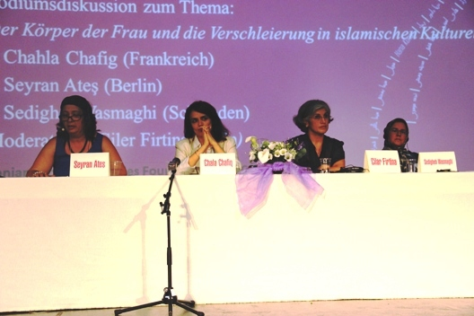

|
|
زن، تن و اختیار
شنبه5 مرداد 1392
رادیو زمانه: بیست و چهارمین کنفرانس بنیاد پژوهشهای زنان ایران با تم محوری «زن، تن و اختیار»، روز ۲۶ ژوئیه در شهر کلن آغاز شد.

در روز اول این کنفرانس سوزانه بئر، قاضی سنای اول دیوان عالی نظارت بر قانون اساسی آلمان در مورد مفاهیم کرامت انسانی، حقوق انسان، برابری همه انسانها و تبعیضهای جاری در متن جامعه، سخنرانی کرد.
ساغر غیاثی که در سازمان حقوق بشری «فرانت لاین دیفندرز» به فعالیت مشغول است، برنده جایزه حامد شهیدیان شد. شهیدیان، پژوهشگر و جامعهشناس فقید ایرانی-کانادایی است که در حوزه مطالعات جنسیت و فمنیسم آثار فراوانی به جای گذاشته است.
امل رمسیس، فیلمساز و حقوقدان مصری از راه کنفرانس ویدئویی سخنرانی کرد و در سخنان خود به نقش زنان در بهار عربی، اعتراضات فعلی در مصر، اخوانالمسلمین و خشونت و تجاوزهای «سازماندهی شده» آنان علیه زنان، پرداخت.
در ادامه برنامههای روز نخست کنفرانس، میزگرد «پیکر زن و حجاب در جوامع اسلامی» با شرکت سیران آتش از برلین، شهلا شفیق از فرانسه، صدیقه وسمقی از سوئد، برگزار شد.